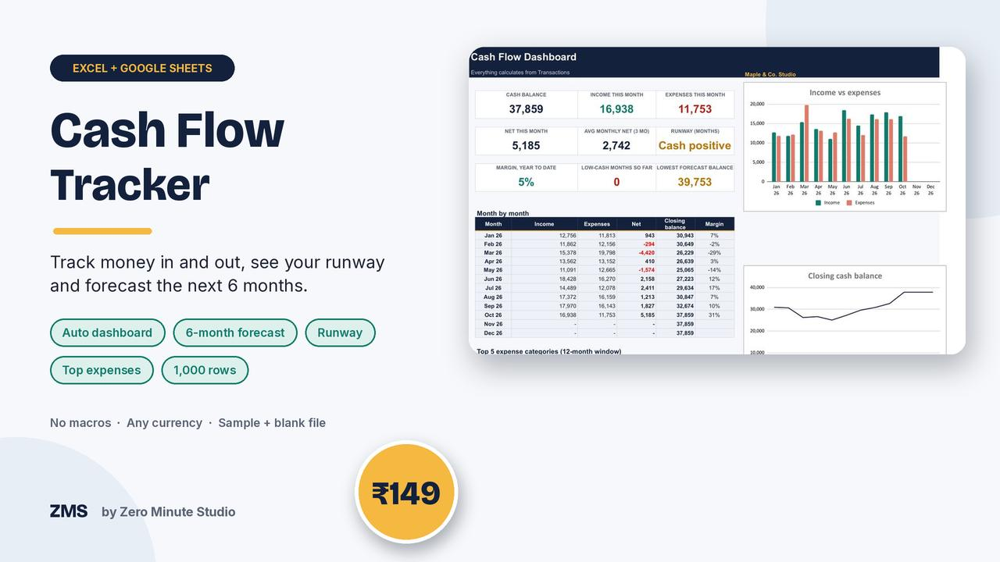
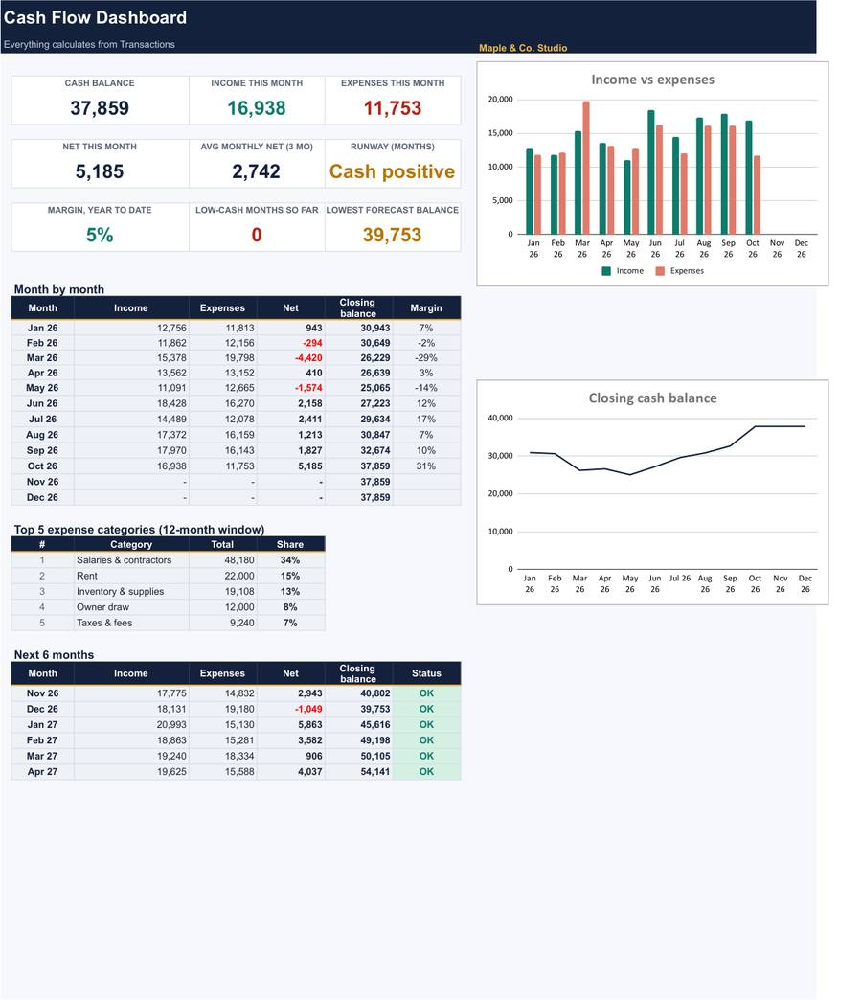
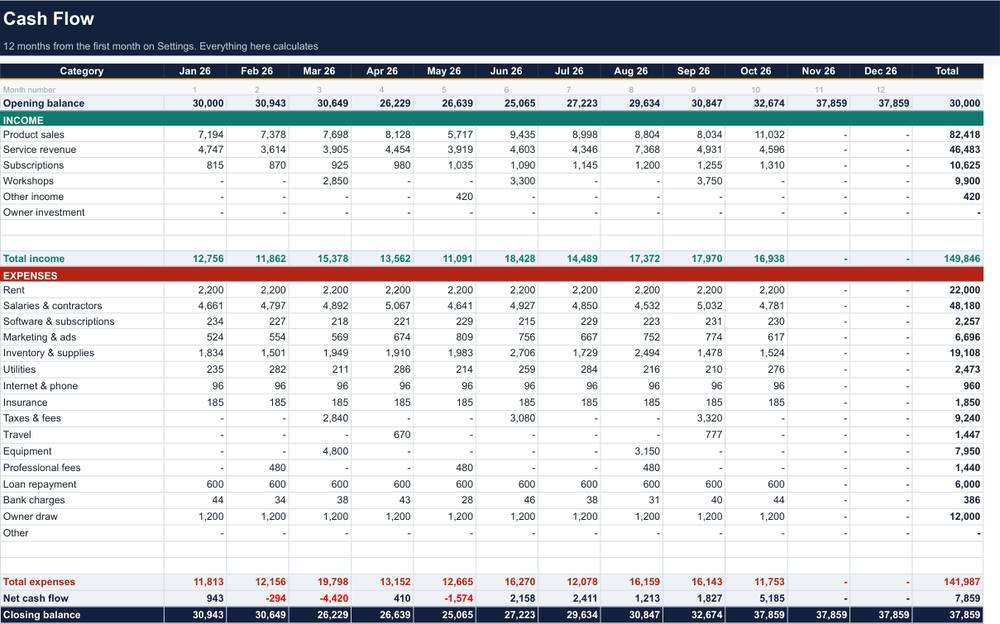

Small Business Cash Flow Tracker

Know exactly where your business cash stands. Log money in and out, and a live dashboard shows your cash balance, how long it will last and what the next six months look like, so you see a cash crunch before it arrives.
- Dashboard: cash balance, monthly net, runway, margin, charts and top 5 expenses
- Transactions log for up to 1,000 payments, with Income and Expense category lists
- 12-month Cash Flow statement that prints on one page
- 6-month Forecast with growth rates and one-off items
- Low-cash alert level you set yourself
- Sample file, blank file and a 2-page Quick Start PDF
Works in Excel 2010+ and Google Sheets. No macros, no add-ins, any currency.
Preview


Buy now: ₹149 (~$1.75)FAQ
What format is it? An .xlsx file for Excel and Google Sheets, plus a PDF guide.
Who is it for? Small business owners, freelancers, shops, studios and side hustles that want to see their cash clearly.
How do I get it? Instantly after payment. For your own business use; please don't resell the files.
We don't do refund & return ✌️